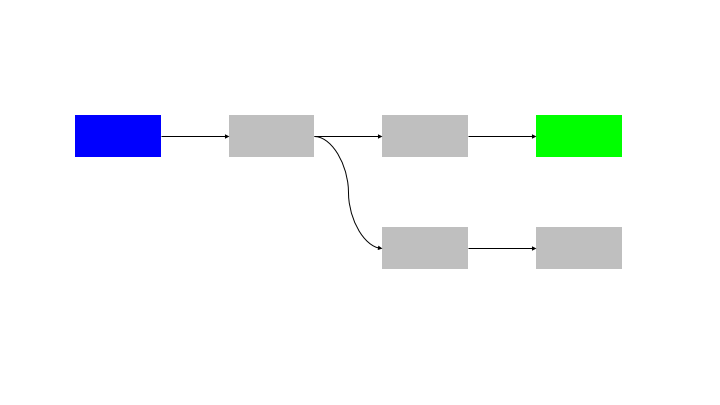

One of the challenges I have recently faced in my work at Deloitte is how to design computer vision applications that can be easily built and extended by data scientists while efficiently using available compute resources.
The computer vision applications in question have the below properties that make this a complex undertaking:
To allow for a modular approach to development, each step in the pipeline is abstracted as a “building block”. These blocks must then be called in order to complete the analysis of a single input.
One simple way to architect this would be to simply execute the blocks in order. This can be seen in the sample analysis pipeline below.
If each building block could be abstracted as a function, this is equivalent to simply calling the functions in (topological) order.
CODE EXAMPLEThis approach is inefficient as no work is done in parallel, complexity (3). This inefficiency is particularly problematic when dealing with lengthly GPU inference, during which CPU computation or IO tasks could be competed.
An improvement would be to process a second input through the pipeline at the same time, using the spare CPU capacity in the first input to process the second input. This would require the use of threads or processes to provide parallel processing.
The natural extension of this pattern is to run N inputs through N blocks, so there is no idle time for any node.
This solution has an issue in coordination, as the processing of the blocks must be perfectly in sync. There is also the questions of:
These require the use of a synchronisation and messaging layer to handle these requirements. This requires a “command and control” system that has visibility over the state of all of the building blocks and control to ensure that they are in sync.
One method to avoid the need for a command and control is to use a queue data structure on the communication paths between blocks. This can be a local queue in the case that the blocks are all operating on the same memory or a remote store (eg Redis queue) if the blocks are distributed between containers or machines.
The queues provide:
This is provided without needing a command and control structure. Each block is autonomous and self managing.